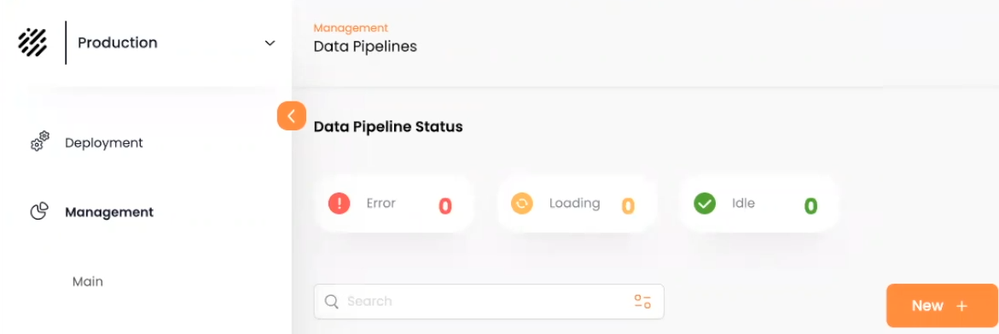
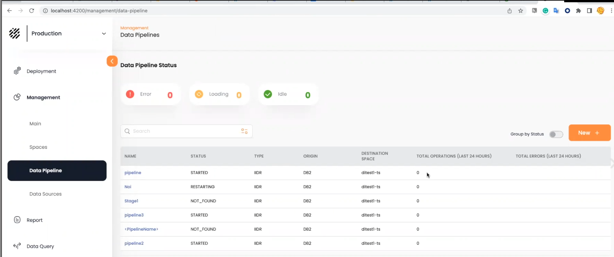

Data Pipelines allow a convenient, no-code method to pipe data from the System of Record to the GigaSpaces in-memory data grid.
A new data pipeline definition will include the definitions of the System of Record databases, tables and fields that will provide data to the pipeline. The definition also indicates the in-memory
Additional information includes optional validation rules and automatic conversion of specified field definitions.
From the Data Pipeline Status screen, press New + to begin the pipeline definition process.

After you have added the tables and saved the pipeline, save the changes and press Start to start the pipeline.
The pipeline will show as Started in the Data Pipeline Status screen:
